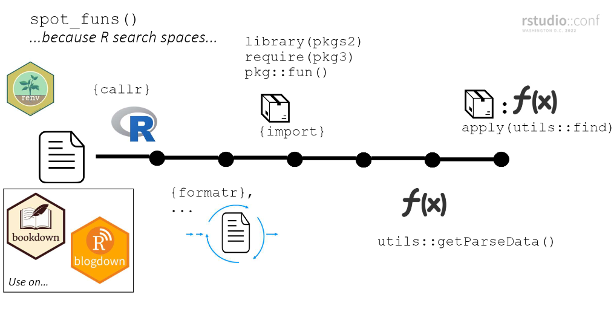

- Installation
- Talks and posts
- Examples of funspotr built reference tables
- Spot functions in a file
- Spot functions on all files in a project
- Other things
- How
spot_funs()works - Limitations, problems, musings
The goal of funspotr (R function spotter) is to make it easy to identify which R functions and packages are used in files and projects. It was initially written to create reference tables of the functions and packages used in a few popular github repositories1.
There are roughly three types of functions in funspotr:
-
list_files_*(): that identify files in a repository or related location -
spot_*(): that identify functions or packages in files - other helpers that manipulate or plot outputs from the above functions
funspotr is set-up for parsing R, Rmarkdown or Quarto files. If you want to parse a Jupyter notebook you should first convert it to an appropriate file type. If you pass in a file type that is not recognized (e.g. a .txt file) funspotr will attempt to parse it as if it is a .R script.
funspotr is primarily designed for identifying the functions / packages in self-contained files or collections of self-contained files (e.g. a blogdown project2). Though see Package dependencies in another file for examples of using it in other contexts.
Installation
Install the latest stable version of funspotr from CRAN with:
install.packages("funspotr")You can install the development version of funspotr from GitHub with:
# install.packages("devtools")
devtools::install_github("brshallo/funspotr")Talks and posts
- slides and presentation from Rstudio Conf 2022 From summarizing projects to setting tags, uses of parsing R files
- Part 1 of 3 from a series on Identifying R functions and packages…
Examples of funspotr built reference tables
funspotr can be used to create reference tables of the functions and packages used in R projects.
Spot functions in a file
The primary function in funspotr is spot_funs() which returns a dataframe showing the functions and associated packages used in a file.
library(funspotr)
file_lines <- "
library(dplyr)
require(tidyr)
as_tibble(mpg) %>%
mutate(class = as.character(class)) %>%
group_by(class) %>%
nest() %>%
mutate(stats = purrr::map(data,
~lm(cty ~ hwy, data = .x)))
made_up_fun()
"
file_output <- tempfile(fileext = ".R")
writeLines(file_lines, file_output)
spot_funs(file_path = file_output)
#> # A tibble: 10 × 2
#> funs pkgs
#> <chr> <chr>
#> 1 library base
#> 2 require base
#> 3 as_tibble tidyr
#> 4 mutate dplyr
#> 5 as.character base
#> 6 group_by dplyr
#> 7 nest tidyr
#> 8 map purrr
#> 9 lm stats
#> 10 made_up_fun (unknown)-
funs: functions in file -
pkgs: best guess as to the package the functions came from
- …3
Spot functions on all files in a project
funspotr has a few list_files_*() functions that return a dataframe of relative_paths and absolute_paths of all the R, Rmarkdown, or quarto files in a specified location (currently: github repo, gists, or local). These can be combined with a variant of spot_funs() that maps the function across each file path found, spot_funs_files():
library(dplyr)
# repo for an old presentation I gave
gh_ex <- list_files_github_repo(
repo = "brshallo/feat-eng-lags-presentation",
branch = "main") %>%
spot_funs_files()
gh_ex
#> # A tibble: 4 × 3
#> relative_paths absolute_paths spotted
#> <chr> <chr> <list>
#> 1 R/Rmd-to-R.R https://raw.githubusercontent.com/… <named list>
#> 2 R/feat-engineering-lags.R https://raw.githubusercontent.com/… <named list>
#> 3 R/load-inspections-save-csv.R https://raw.githubusercontent.com/… <named list>
#> 4 R/types-of-splits.R https://raw.githubusercontent.com/… <named list>-
relative_paths: relative filepath -
absolute_paths: absolute filepath (in this case URL to raw file on github) -
spotted:purrr::safely()style list-column of results4 from mappingspot_funs()acrossabsolute_paths.
These results may then be unnested with the helper funspotr::unnest_results() to provide a table of functions and packages by filepath. This can be manipulated like any other dataframe – say we want to filter to only those files where here, readr or rsample packages are used.
gh_ex %>%
unnest_results() %>%
filter(pkgs %in% c("here", "readr", "rsample"))
#> # A tibble: 8 × 4
#> funs pkgs relative_paths absolute_paths
#> <chr> <chr> <chr> <chr>
#> 1 here here R/Rmd-to-R.R https://raw.githubus…
#> 2 read_csv readr R/feat-engineering-lags.R https://raw.githubus…
#> 3 initial_time_split rsample R/feat-engineering-lags.R https://raw.githubus…
#> 4 training rsample R/feat-engineering-lags.R https://raw.githubus…
#> 5 testing rsample R/feat-engineering-lags.R https://raw.githubus…
#> 6 sliding_period rsample R/feat-engineering-lags.R https://raw.githubus…
#> 7 write_csv readr R/load-inspections-save-csv.R https://raw.githubus…
#> 8 here here R/load-inspections-save-csv.R https://raw.githubus…The outputs from funspotr::unnest_results() can also be passed into funspotr::network_plot() to build a network visualization of the connections between functions/packages and files5.
Previewing and customizing files to parse
You might only want to parse certain file types or a subset of the files in a repo.
preview_files <- list_files_github_repo(
repo = "brshallo/feat-eng-lags-presentation",
branch = "main")
preview_files
#> # A tibble: 4 × 2
#> relative_paths absolute_paths
#> <chr> <chr>
#> 1 R/Rmd-to-R.R https://raw.githubusercontent.com/brshallo/feat…
#> 2 R/feat-engineering-lags.R https://raw.githubusercontent.com/brshallo/feat…
#> 3 R/load-inspections-save-csv.R https://raw.githubusercontent.com/brshallo/feat…
#> 4 R/types-of-splits.R https://raw.githubusercontent.com/brshallo/feat…Say we only want to parse the “types-of-splits.R” and “Rmd-to-R.R” files.
preview_files %>%
filter(stringr::str_detect(relative_paths, "types-of-splits|Rmd-to-R")) %>%
spot_funs_files() %>%
unnest_results()
#> # A tibble: 24 × 4
#> funs pkgs relative_paths absolute_paths
#> <chr> <chr> <chr> <chr>
#> 1 purl knitr R/Rmd-to-R.R https://raw.githubusercontent.com/br…
#> 2 here here R/Rmd-to-R.R https://raw.githubusercontent.com/br…
#> 3 library base R/types-of-splits.R https://raw.githubusercontent.com/br…
#> 4 theme_set ggplot R/types-of-splits.R https://raw.githubusercontent.com/br…
#> 5 theme_bw ggplot R/types-of-splits.R https://raw.githubusercontent.com/br…
#> 6 set.seed base R/types-of-splits.R https://raw.githubusercontent.com/br…
#> 7 tibble dplyr R/types-of-splits.R https://raw.githubusercontent.com/br…
#> 8 rep base R/types-of-splits.R https://raw.githubusercontent.com/br…
#> 9 today lubridate R/types-of-splits.R https://raw.githubusercontent.com/br…
#> 10 days lubridate R/types-of-splits.R https://raw.githubusercontent.com/br…
#> # ℹ 14 more rowsNote that if you have a lot of files in a repo you may need to set-up sleep periods or clone the repo locally and then parse the files from there so as to stay within the limits of github API hits.
Other things
Files you didn’t write
Functions created in the file as well as functions from unavailable packages (or packages that don’t exist) will output as pkgs = "(unknown)".
file_lines_missing_pkgs <- "
library(dplyr)
as_tibble(mpg)
hello_world <- function() print('hello world')
madeuppkg::made_up_fun()
hello_world()
"
missing_pkgs_ex <- tempfile(fileext = ".R")
writeLines(file_lines_missing_pkgs, missing_pkgs_ex)
spot_funs(file_path = missing_pkgs_ex)
#> # A tibble: 5 × 2
#> funs pkgs
#> <chr> <chr>
#> 1 library base
#> 2 as_tibble dplyr
#> 3 print base
#> 4 made_up_fun (unknown)
#> 5 hello_world (unknown)To spot which package a function is from you must have the package installed locally. Hence for files on others’ github repos or that you created on a different machine, it is a good idea to start with funspotr::check_pkgs_availability() to see which packages you are missing and install the missing packages locally. If you don’t want to edit your global library you may want to use renv or other environment management tools.
funspotr has an internal helper funspotr::install_missing_pkgs() for installing missing packages:
spot_pkgs(file_output) %>%
check_pkgs_availability() %>%
funspotr::install_missing_pkgs()Alternatively, you may want to clone the repository locally and then use renv::dependencies() and only then start using funspotr6.
Package dependencies in another file
spot_funs() is currently set-up for self-contained files. But spot_funs_custom() allows the user to explicitly specify pkgs where functions may come from. This is useful in cases where the packages loaded are not in the same location as the file_path (e.g. they are loaded via source(), or a DESCRIPTION file, or some other workflow). For example, below is a made-up example where the library() calls are made in a separate file and source()’d in.
# file where packages are loaded
file_libs <- "library(dplyr)
library(lubridate)"
file_libs_output <- tempfile(fileext = ".R")
writeLines(file_libs, file_libs_output)
# File of interest where things happen
file_run <- glue::glue(
"source('{ file_libs_output }')
tibble::tibble(days_from_today = 0:10) %>%
mutate(date = today() + days(days_from_today))
",
file_libs_output = stringr::str_replace_all(file_libs_output, "\\\\", "/")
)
file_run_output <- tempfile(fileext = ".R")
writeLines(file_run, file_run_output)
# Identify packages using both files and then pass in explicitly to `spot_funs_custom()`
pkgs <- c(spot_pkgs(file_libs_output),
spot_pkgs(file_run_output, show_explicit_funs = TRUE))
spot_funs_custom(
pkgs = pkgs,
file_path = file_run_output)
#> # A tibble: 5 × 2
#> funs pkgs
#> <chr> <chr>
#> 1 source base
#> 2 tibble tibble
#> 3 mutate dplyr
#> 4 today lubridate
#> 5 days lubridateAlso see funspotr::spot_pkgs_from_description().
Show all function calls
Passing in show_each_use = TRUE to ... in spot_funs() or spot_funs_files() will return all instances of a function call rather than just once for each file.
Compared to the initial example, mutate() now shows-up at both rows 4 and 8:
spot_funs(file_path = file_output, show_each_use = TRUE)
#> # A tibble: 11 × 2
#> funs pkgs
#> <chr> <chr>
#> 1 library base
#> 2 require base
#> 3 as_tibble tidyr
#> 4 mutate dplyr
#> 5 as.character base
#> 6 group_by dplyr
#> 7 nest tidyr
#> 8 mutate dplyr
#> 9 map purrr
#> 10 lm stats
#> 11 made_up_fun (unknown)Helper for blog tags
To automatically have your packages used as the tags for a blog post you can add an inline function funspotr::spot_tags() to a bullet in the tags or categories argument of your YAML header. For example:
How spot_funs() works
funspotr mimics the search space of each file prior to identifying pkgs/funs. At a high-level…
- Create a new R instance using callr and clean-up the specified file using formatR
- Load packages. Explicit calls (e.g.
pkg::fun()) are loaded individually via import and are loaded last (putting them at the top of the search space)7.
(steps 1 and 2 needed so that step 4 has the best chance of identifying the package a function comes from in the file.)
- Pass file through
utils::getParseData()and filter to just functions - Pass functions through
utils::find()to identify associated package
Explainer slide from Rstudio Conf 2022 presentation:

Limitations, problems, musings
- funspotr is specific to R. If you try and pass in a file from a different language you will get a parsing error or the code commented out8. The steps taken by funspotr would also not be needed in many other programming languages9.
- funspotr does not work perfectly at identifying functions or packages. One common example is it will not identify functions passed as arguments. For example it will not identify
meanin this example:lapply(x, mean). Similarly it will not identify functions withinswitch(). See #13. - If a file contains R syntax that is not well defined it will not be parsed and will return an error. See formatR#further-notes (used by funspotr in parsing) for other common reasons for failure.
-
knitr::read_chunk()andknitr::purl()in a file passed to funspotr will also frequently cause an error in parsing. See knitr#1753 & knitr#1938 - Please open an issue if you find other cases where parsing breaks :-) .
- As mentioned elsewhere, the default parsing of
spot_funs()is primarily for cases where package dependencies are loaded in the same file that they are used in10. Scripts that are not self-contained typically should have thepkgsargument provided explicitly viaspot_funs_custom(). - funspotr does not pay attention to when functions are reexported from elsewhere. For example, many tibble functions are reexported by dplyr and tidyr – funspotr though will not know the “true” home of these functions it is simply looking at the top of the search space11.
- Feel free to open an issue if you’d be interested in a simplifying function or vignette for mapping
spot_funs()through other folder structures not yet mentioned. - All the functions in “R/spot-pkgs.R” would probably be better handled by something like
renv::dependencies()or a parsing based approach. The simple regex’s I use have a variety of problems12.- There may be something to be learned from how
R CMD checkdoes function parsing. funspotr’s current approach is comparatively slow and uses imperfect heuristics.
- There may be something to be learned from how
- Does not identify infix operators, e.g.
+ - funspotr has lots of dependencies. It may have make sense to move some of the non-core functionality into a separate package (e.g. stuff concerning
list_files*()) - Rather than running
list_files_github_repo()it may make sense to instead clone the repo locally and then runlist_files_wd()from the repo prior to runningspot_funs_files()as this will limit the number of API hits to github. - Currently it’s possible to have github block you pretty soon due to hitting too many files (in which case you’ll likely get a 403 or connection error). There are some things that could be done to reduce number of github API hits (e.g. above bullet, or using
Sys.sleep(), …). - Throughout the code and package documentation I have “inspiration” bullets followed by a link pointing to places where I took stuff from stack overflow, github, or other packages. Also see the footnotes of the README.